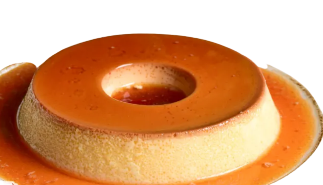
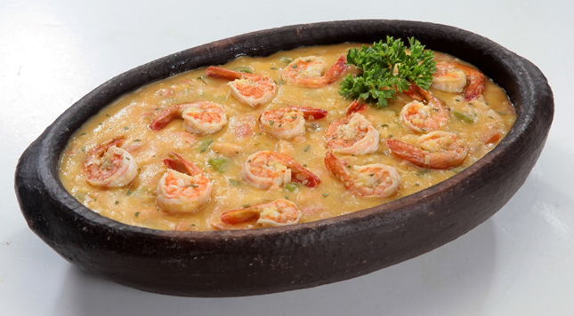

Pudim
- 1 leite condensado
- leite
- 3 ovos
Coloque o leite condensado no liquidificado e os ovos, com a mesma medida do leite condensado duas de leite, bata ate fica omogénia.
Em uma forma caramelise o açúcar, depois que endurecer o caramelo despeje o pudim na forma e leve ao forno por duas horas a 200 graus em banho maria.

Creme de camarão
- 1 kg de camarão
- 3 creme de leite
- 1 pimetão amarelo
- 1 pimetão vermelho
- 2 cebolas
- 3 tomates
- 1 caldo de galinha
- 400g de queijo mussarela
Doure os camarões com alho, reseve-os sepadamente.
Na mesma panela refogue todos os temperos e em seguida junte o creme de leite, os camarões e por útilmo o queijo mussarela ralado. Mexa bem e sirva!
Creme de ninho com morango
- 1 leite condensado
- 2 creme de leite
- 2 xicara de leite em pó ninho
- 500g de morango